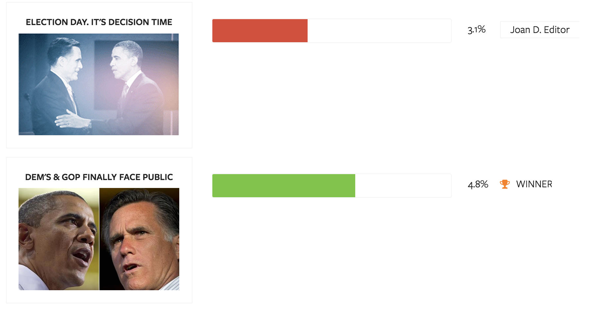
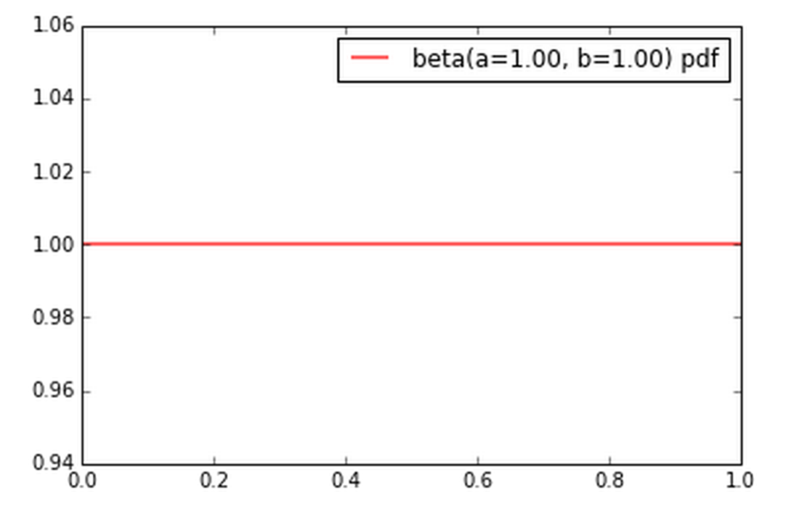
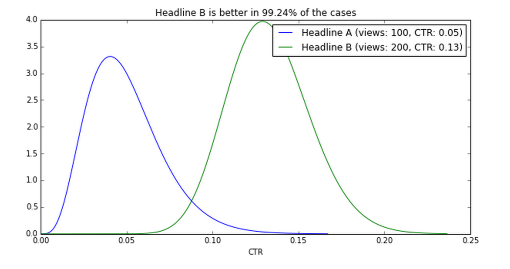
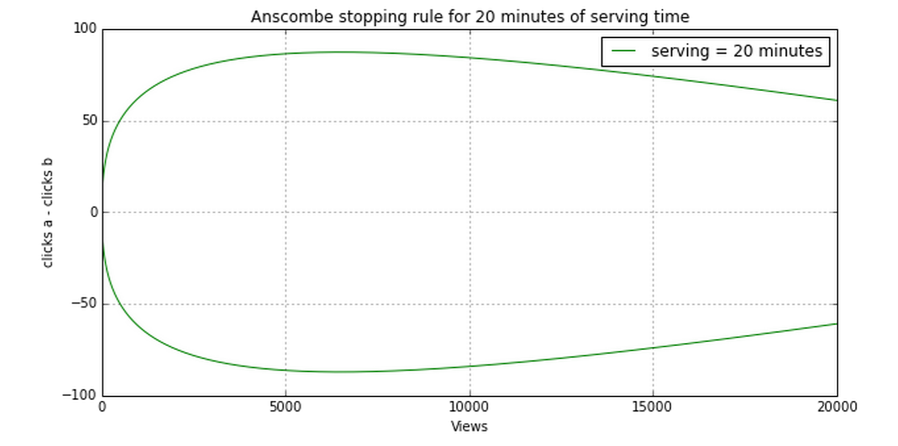
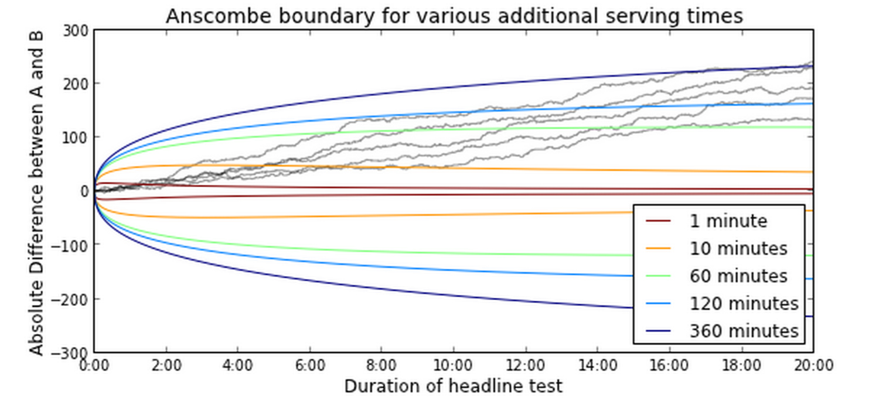
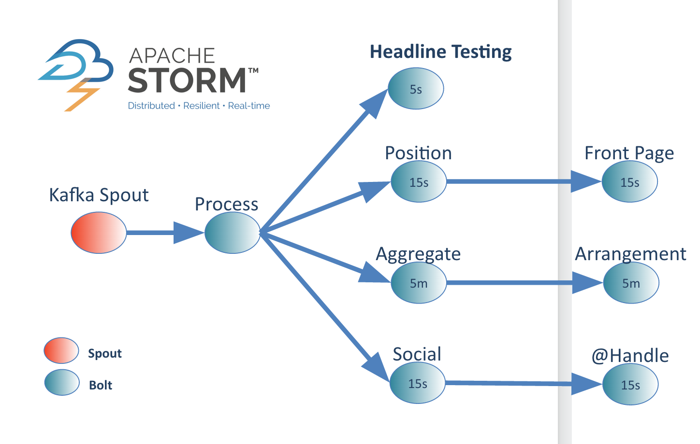

A/B Headline Testing at Outbrain: Visual Revenue
Rob Doherty / @robdoherty2
Agenda
- A/B Headline Testing: Problem Statement
- Frequentist approach
- Bayesian approach
- Certainty of conclusion
Problem Statement
What is A/B Headline testing?

What is A/B Headline testing?
Headline A: "What Harbaugh regrets about Super Bowl" (2.46% CTR)
Headline B: "John Harbaugh explains Super Bowl tirade" (4.93% CTR)
Constraints
- Headlines may be on the front page for a short time
- The number of readers varies greatly per front page
- The CTR of a headline depends on frontpage position
- Front pages are dynamic, so headlines can change position
Frequentist Approach
Frequentist Approach
- The parameter-of-interest is CTR
- Null hypothesis testing: assume that there are true-but-unknown CTRs for A and B
- the goal is to figure out if they are different or not
Frequentist Approach
- Probability that an effect is not due to just chance alone
- Must define in advance the probability of a sampling error
- Sample size is an important component
An example
| Scenario 1 | Scenario 2 | Scenario 3 | Scenario 4 | |
|---|---|---|---|---|
| After 200 observations | Insignificant | Insignificant | Significant | Significant |
| After 500 observations | Insignificant | Significant | Insignificant | Significant |
| End of experiment | Insignificant | Significant | Insignificant | Significant |
Bayesian Approach
Bayesian Approach
- Frequentist: probability measures a proportion of outcomes
- Bayesian: probability measures a degree of belief
Bayesian Approach
- $CTR_A$ and $CTR_B$ are no longer fixed numbers, but probability distributions
- Now the question becomes: What is the probability that $CTR_A$ is larger than $CTR_B$ given the data from the experiment?
$$P(CTR_A > CTR_B | data)$$
Bayes Theorem
$$P(A|B) = {P(B|A) P(A)\over P(B)}$$
Bayes Theorem
- Prior - a distribution that encodes your prior belief about the parameter-of-interest
- Likelihood - a function that encodes how likely your data is given a range of possible parameters
- Posterior - a distribution of the parameter-of-interest given your data, combining the prior and likelihood
Bayes Theorem: Conjugate Prior
- Prior - a distribution that encodes your prior belief about the parameter-of-interest
- Conjugate Prior - for certain choices of the prior, the posterior has the same algebraic form as the prior (with updated parameters)
Proportional Bayes Theorem
$$P(A|B) \sim P(B|A) P(A)$$
the posterior is proportional to the liklihood times the prior
Beta Distribution
- Represents a distribution of probabilities
- it represents all possible values of a probability when we don't know what that probability is
- The domain is $(0,1)$, just like a probability
- Parameters: $$Beta(\alpha + hits, \beta + misses)$$
We model $CTR_A$ and $CTR_B$ with the Beta Distribution
$CTR \sim Beta(\alpha,\beta)$
Beta Distribution
$$Beta(\alpha,\beta)$$
$$\alpha = pageviews * CTR$$
$$\beta = pageviews * (1 - CTR)$$
Beta Distribution
- Assumptions of prior
- Before we observe any clicks we assume all headlines are equally likely to be clicked on
- That is, we start with a uniform prior
- A uniform distribution is the same as Beta(1,1)
Uniform Prior
Picking a Winner: Random Sampling

Picking a Winner
Test Stopping Criteria
Anscombe Boundary
$$|c_a - c_b | > \Phi^{-1} \left(\frac{n}{k+2n}\right)\sqrt{n}$$
$|c_a - c_b|$ - absolute difference between clicks for both headlines
$\Phi^{-1}$ - the quantile function of the standard normal (or ppf, or inverse cdf)
$n$ - the number of page views so far
$k$ - the number of future readers who will be exposed to test, given a maximum time
Test Stopping Criteria
Test Stopping Criteria
Implementation
Further Reading
- Bayesian headline testing at Visual Revenue, Jeroen Janssens
- A/B Testing with Hierarchical Models in PythonManojit Nandi
- Bayesian A/B TestsSergey Feldman
- Bayesian AB TestingMaciej Kula